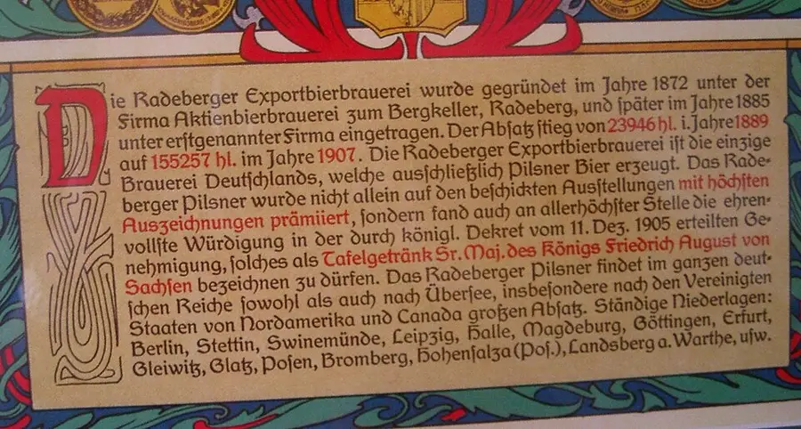

대표 로고대표 브랜드 마크
대표 로고대표 브랜드 마크Radeberger Brewery
Radeberger Brewery는 독일 Radeberg에 본사를 둔 맥주 양조장이다. 1872년 Zum Bergkeller라는 이름으로 설립되었고 Pilsner 스타일 맥주를 전문으로 양조한다.
최종 업데이트
Radeberger Brewery는 어떤 브랜드인가
이 양조장은 독일 Radeberg에 본사를 둔 맥주 회사이며, Radeberg는 Dresden 인근의 도시이다. 1872년 Aktienbrauerei zum Bergkeller라는 이름의 주식회사 형태 양조장으로 출발했다.
대표 맥주는 Radeberger Pilsner이며, 독일에서 가장 많이 팔리는 맥주 가운데 9위로 소개된다. 1905년 미국과 캐나다로 수출을 시작했고 1954년에는 전 세계 수출을 시작했다.
1990년 Binding Brauerei가 인수했고, 2004년에는 Oetker Gruppe가 인수해 증시에서 제외하며 비상장 회사로 만들었다. TV 시리즈 Two and a Half Men의 등장인물 Charlie Harper가 즐겨 마시는 맥주로 나온 것은 양조장과의 협업에 따른 것이다.
Radeberger Brewery는 어떻게 시작되고 성장했나
1872년 Gustav Adolf Eduard Philipp가 8월 Max Rumpelt, Julius Schöne, Carl Hermann Rasche, Heinrich Eduard Minckwitz와 함께 Aktienbrauerei zum Bergkeller를 설립했다. 이 맥주는 한동안 작센 왕을 위해서도 양조되었다.
1885년 국경을 넘어 출하하기 시작하면서 Radeberger Exportbierbrauerei로 이름을 바꿨고, 1880년대 후반에는 연간 300,000 cases 규모에 이르렀다. 1887년 Otto von Bismarck가 Radeberger Pilsner를 'Kanzler-Bräu'로 격상했다.
1946년에는 동독 공산 정부가 양조장을 장악했다.
Radeberger Brewery의 브랜드 아이덴티티는 무엇인가
독일 Radeberg에서 1872년 시작해 Pilsner 스타일만 양조하는 양조장으로, Bismarck가 'Kanzler-Bräu'로 격상한 맥주를 내놓는 점이 특징이다.
Radeberger Brewery의 대표 제품과 서비스는 무엇인가
대표 제품은 Pilsner 스타일 맥주인 Radeberger Pilsner이다. 이 양조장은 독일에서 처음으로 Pilsner 스타일만 양조했고 지금까지 남아 있는 양조장으로 소개된다.
Radeberger Pilsner는 1887년 Otto von Bismarck에 의해 'Kanzler-Bräu'로 격상되었고, 1905년에는 작센 왕 Frederick Augustus III가 가장 좋아하는 술이 되었다. 호주 시장에서는 Wesfarmers를 위해 'Uberbrau'도 양조한다.
수출은 1905년 미국과 캐나다에서 시작해 1954년 전 세계로 확대되었고, 1994년 생산량은 1 million Hectoliter에 이르렀다.
Radeberger Brewery는 지금 어떤 상태인가
1990년 Binding Brauerei에 인수된 뒤 시설을 전면 개선했고, 2004년 Oetker Gruppe가 인수해 증시에서 제외하면서 비상장 회사가 되었다. 위키데이터상 모기업은 Binding-Brauerei이다.
독일에서 가장 많이 팔리는 맥주 가운데 9위에 올라 있다. 호주 시장에서는 Wesfarmers를 위해 'Uberbrau'를 양조한다.
Radeberger Brewery 로고는 어떻게 변해왔나
대표 로고대표 브랜드 마크사진으로 보는 Radeberger Brewery의 역사

자주 묻는 질문
Radeberger Brewery는 어느 나라 브랜드인가요?
Radeberger Brewery는 독일의 식음료 브랜드입니다.
Radeberger Brewery는 언제 설립되었나요?
Radeberger Brewery는 1872년 설립되었습니다.
Radeberger Brewery의 브랜드 아이덴티티는 무엇인가요?
독일 Radeberg에서 1872년 시작해 Pilsner 스타일만 양조하는 양조장으로, Bismarck가 'Kanzler-Bräu'로 격상한 맥주를 내놓는 점이 특징이다.
Radeberger Brewery의 대표 제품은 무엇인가요?
대표 제품은 Pilsner 스타일 맥주인 Radeberger Pilsner이다.
Radeberger Brewery는 어느 기업이 소유하고 있나요?
1990년 Binding Brauerei에 인수된 뒤 시설을 전면 개선했고, 2004년 Oetker Gruppe가 인수해 증시에서 제외하면서 비상장 회사가 되었다.
Radeberger Brewery의 본사는 어디에 있나요?
Radeberger Brewery의 본사는 Radeberg에 있습니다(위키데이터 기준).
Radeberger Brewery의 공식 웹사이트는 어디인가요?
Radeberger Brewery의 공식 웹사이트는 http://www.radeberger.de/ 입니다.
출처와 검증
Radeberger Brewery 관련 참고: 공식 웹사이트 · 위키데이터 Q568797 · 영어 위키백과. 브랜드명은 한글과 원어를 함께 표기하되 데이터에 없는 표기는 만들지 않습니다. 기원 국가·설립연도는 검수된 정의문에서 확인된 값을 우선하고, 없을 때만 공식 웹사이트 URL이 일치하는 위키데이터 개체의 값을 씁니다. 위키데이터 값은 2026-11-08 기준입니다.